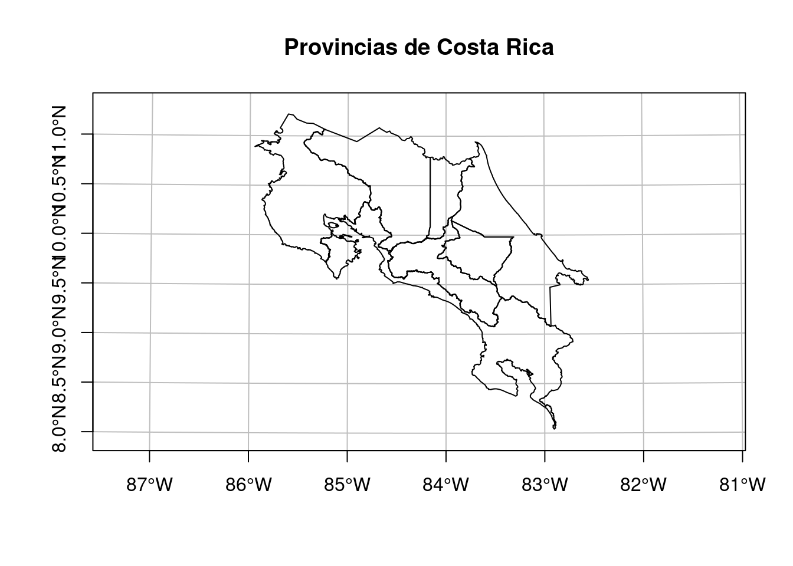
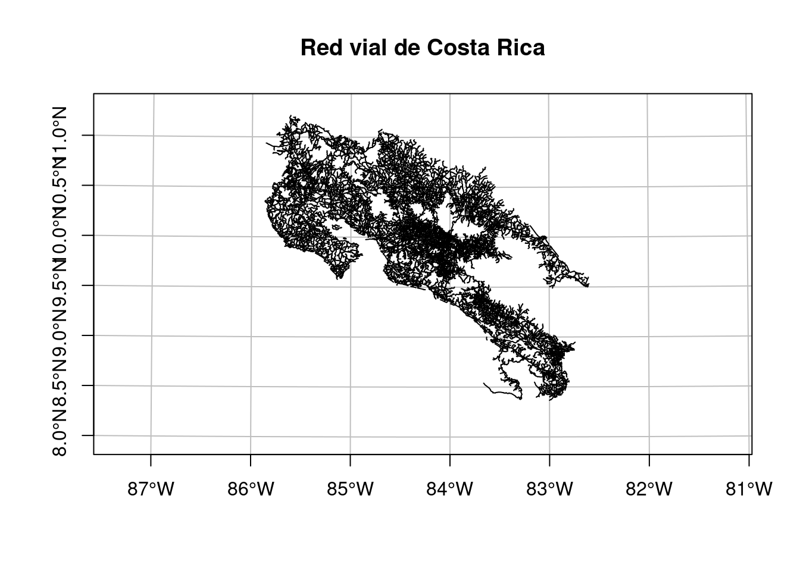
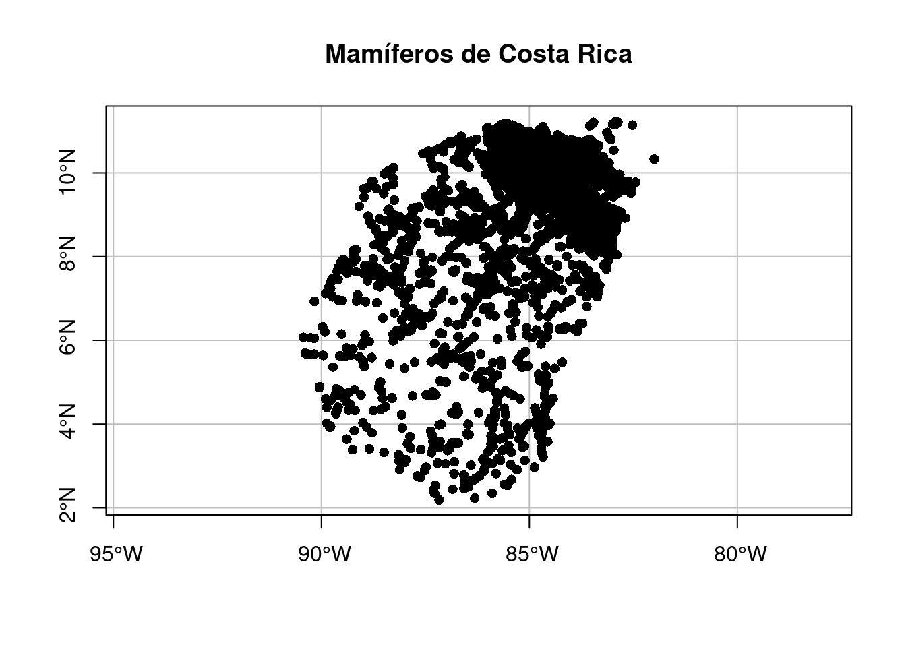
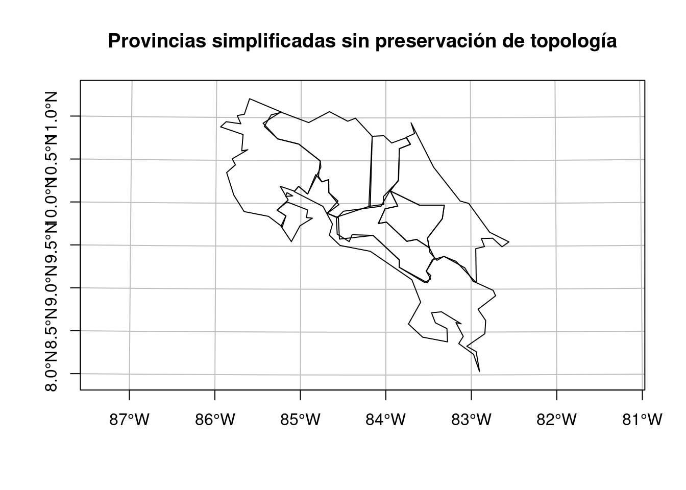
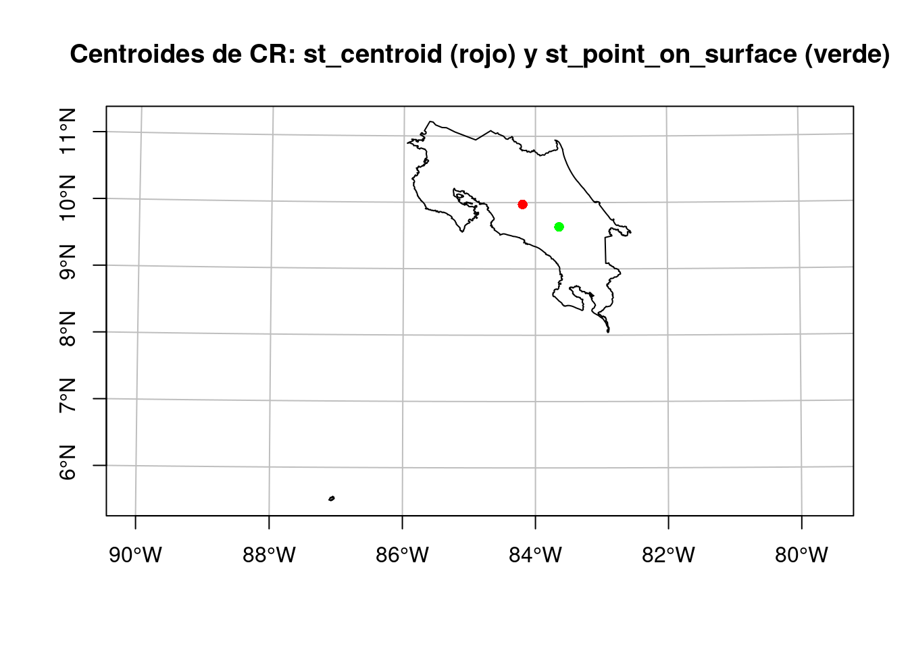
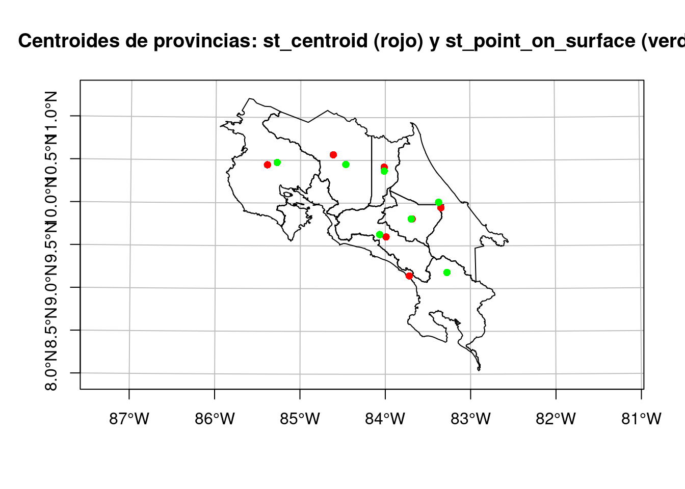
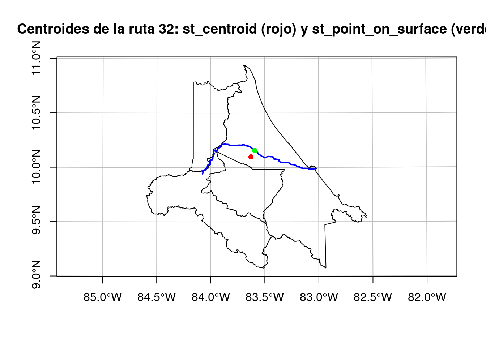
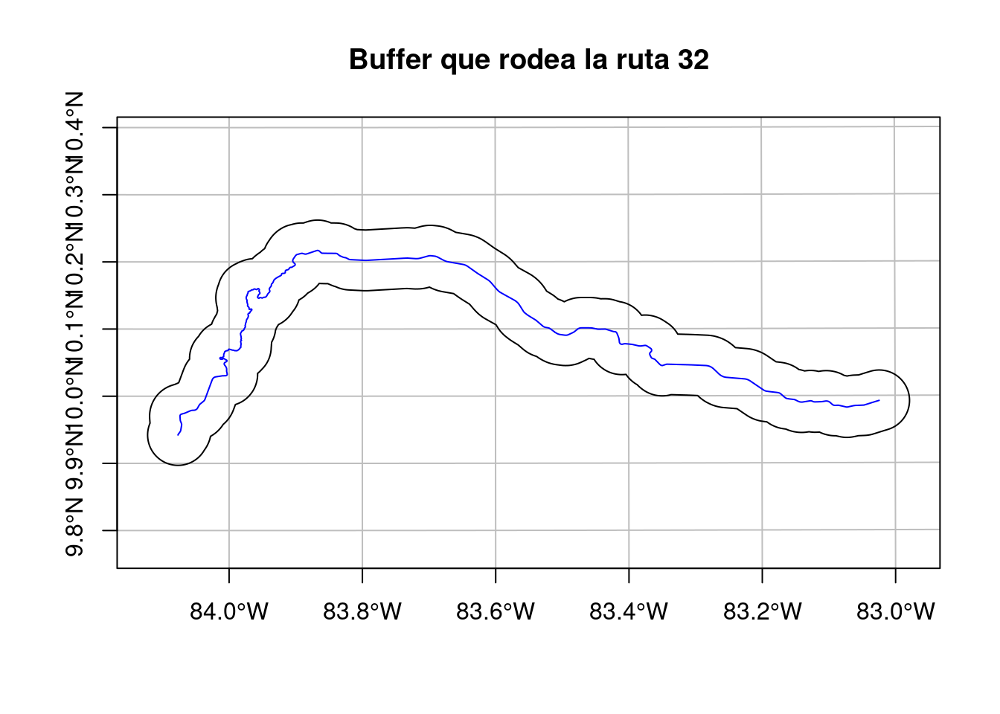
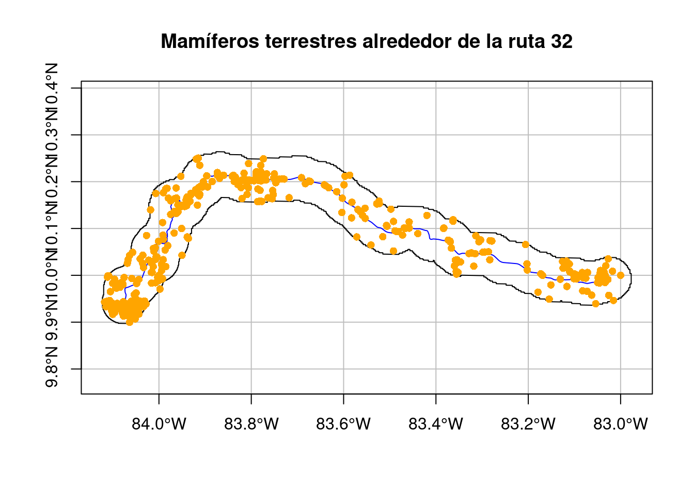

# Carga de paquetes
library(tidyverse)
library(DT)
library(sf)
library(leaflet)
library(leaflet.extras)
library(leafem)14 Operaciones con geometrías
14.1 Resumen
Las operaciones con geometrías para datos vectoriales incluyen simplificación, creación de centroides, creación de áreas de amortiguamiento (buffers), recortes (clipping) y uniones de geometrías, entre otras. Por su parte, las operaciones con geometrías para datos raster incluyen intersecciones geométricas, agregación y desagregación, entre otras.
14.2 Trabajo previo
14.2.1 Lecturas
Lovelace, R., Nowosad, J., & Münchow, J. (2019). Geocomputation with R (capítulo 5). CRC Press. https://geocompr.robinlovelace.net/
14.2.2 Carga de paquetes
14.2.3 Carga de datos para ejemplos
14.2.3.1 Provincias de Costa Rica
Es un archivo GeoJSON con los polígonos de las provincias de Costa Rica. Este archivo proviene de un geoservicio de tipo Web Feature Service (WFS) publicado por el Instituto Geográfico Nacional (IGN).
# Lectura y visualización de datos geoespaciales de provincias
# Lectura
provincias <-
st_read(
dsn = "datos/ign/delimitacion-territorial-administrativa/provincias.geojson",
quiet = TRUE
)
# Visualización en un mapa
plot(
provincias$geometry,
extent = st_bbox(c(xmin = 280000, xmax = 660000, ymin = 880000, ymax= 1250000)),
main = "Provincias de Costa Rica",
axes = TRUE,
graticule = TRUE
)
14.2.3.2 Red vial de Costa Rica
Es un archivo GeoJSON con las líneas de la red vial de Costa Rica. Este archivo proviene de un geoservicio de tipo Web Feature Service (WFS) publicado por el Instituto Geográfico Nacional (IGN).
# Lectura y visualización de datos geoespaciales de la red vial
# Lectura
red_vial <-
st_read(
dsn = "datos/ign/infraestructura/redvial.geojson",
quiet = TRUE
)
# Visualización en un mapa
plot(
red_vial$geometry,
extent = st_bbox(c(xmin = 280000, xmax = 660000, ymin = 880000, ymax= 1250000)),
main = "Red vial de Costa Rica",
axes = TRUE,
graticule = TRUE
)
14.2.3.3 Mamíferos de Costa Rica
Es un archivo CSV con registros de presencia de la clase Mammalia (mamíferos) de Costa Rica. Este archivo proviene de una consulta al portal de datos de la Infraestructura Mundial de Información en Biodiversidad (GBIF).
# Lectura y visualización de datos geoespaciales de mamíferos
# Lectura
mamiferos <-
st_read(
"datos/gbif/mamiferos.csv",
options = c(
"X_POSSIBLE_NAMES=decimalLongitude", # columna de longitud decimal
"Y_POSSIBLE_NAMES=decimalLatitude" # columna de latitud decimal
),
quiet = TRUE
)
# Asignación del CRS WGS84
st_crs(mamiferos) <- 4326
# Visualización en un mapa
plot(
mamiferos$geometry,
pch = 16,
main = "Mamíferos de Costa Rica",
axes = TRUE,
graticule = TRUE
)
14.3 Introducción
Esta lección brinda una visión general de las operaciones con geometrías en datos vectoriales implementadas en el paquete sf y en datos raster implementadas en el paquete terra. Estas operaciones trabajan con la columna de geometrías (ej. geometry, geom) del paquete sf, para el caso de los datos vectoriales, y con la localización geográfica de los pixeles para el caso de los datos raster. En la sección final, se muestran varias operaciones de interacción entre los modelos raster y vectorial.
14.4 Datos vectoriales
Las operaciones con geometrías en datos vectoriales incluyen:
- Simplificación.
- Centroides.
- Áreas de amortiguamiento (buffers).
14.4.1 Simplificación
La simplificación puede realizarse en geometrías de líneas y polígonos. Reduce la cantidad de memoria, disco y ancho de banda que utilizan las geometrías. Para simplificar geometrías, el paquete sf incluye el método st_simplify(), basado en el algoritmo de Douglas-Peucker, el cual recibe el argumento dTolerance para controlar el nivel de generalización de las unidades del mapa. Este argumento se expresa en las unidades de medida del CRS de la capa, por lo que es conveniente utilizar un CRS con unidades de medida de distancias (ej. metros).
El siguiente bloque de código simplifica la capa de provincias, primero sin preservar su topología y luego preservándola.
# Simplificación de la capa de provincias
# Simplificación sin preservación de topología
provincias_simplificado <-
provincias |>
st_simplify(dTolerance = 5000, preserveTopology = FALSE)
# Mapa de la capa de provincias con simplificación y sin preservación de topología
plot(
provincias_simplificado$geometry,
extent = st_bbox(c(xmin = 280000, xmax = 660000, ymin = 880000, ymax= 1250000)),
main = "Provincias simplificadas sin preservación de topología",
axes = TRUE,
graticule = TRUE)
# Simplificación con preservación de topología
provincias_simplificado_topologia <-
provincias |>
st_simplify(dTolerance = 5000, preserveTopology = TRUE)
# Mapa de la capa de provincias con simplificación y con preservación de topología
plot(
provincias_simplificado_topologia$geometry,
extent = st_bbox(c(xmin = 280000, xmax = 660000, ymin = 880000, ymax= 1250000)),
main = "Provincias simplificadas con preservación de topología",
axes = TRUE,
graticule = TRUE)# Tamaño de la capa original
object.size(provincias)12259912 bytes# Tamaño de la capa simplificada sin preservación de topología
object.size(provincias_simplificado)17872 bytes# Tamaño de la capa simplificada con preservación de topología
object.size(provincias_simplificado_topologia)69840 bytesLa función ms_simplify() del paquete `rmapshaper`` proporciona un método alternativo para la simplificación de geometrías, el cual preserva la topología.
14.4.2 Centroides
Un centroide es un punto que identifica el centro de un objeto geográfico. Puede calcularse para geometrías de líneas y de polígonos y se utilizan para brindar una representación simplificada de geometrías más complejas. Existen varios métodos para calcularlos.
El paquete sf incluye la función st_centroid(), la cual calcula el centroide geográfico (comúnmente llamado “el centroide”). Es posible que el centroide geográfico se ubique fuera de la geometría “padre” (ej. en el caso de una geometría con forma de anillo). Para evitar este resultado, la función st_point_on_surface() se asegura de que el centroide esté siempre dentro de la geometría “padre”.
El siguiente bloque de código calcula los centroides para Costa Rica, mediante las dos funciones mencionadas.
# Costa Rica y sus centroides calculados con st_centroid() y st_point_on_surface()
# Mapa de provincias
plot(
st_union(provincias), # unión de los polígonos de provincias
main = "Centroides de CR: st_centroid (rojo) y st_point_on_surface (verde)",
axes = TRUE,
graticule = TRUE)
# Mapa del centroide calculado con st_centroid()
plot(st_centroid(st_union(provincias)),
add = TRUE,
pch = 16,
col = "red")
# Mapa del centroide calculado con st_point_on_surface()
plot(
st_point_on_surface(st_union(provincias)),
add = TRUE,
pch = 16,
col = "green")
# Coordenadas del centroide calculado con st_centroid()
# CRTM05
st_coordinates(st_centroid(st_union(provincias))) X Y
[1,] 478674.4 1102734# WGS84
st_coordinates(st_transform(st_centroid(st_union(provincias)), crs = 4326)) X Y
[1,] -84.19451 9.972725# Coordenadas del centroide calculado con st_point_on_surface()
# CRTM05
st_coordinates(st_point_on_surface(st_union(provincias))) X Y
[1,] 539373.5 1065147# WGS84
st_coordinates(st_transform(st_point_on_surface(st_union(provincias)), crs = 4326)) X Y
[1,] -83.64124 9.632735El siguiente bloque de código calcula los centroides de las provincias de Costa Rica, mediante las dos funciones mencionadas.
# Provincias de Costa Rica y sus centroides calculados con st_centroid() y st_point_on_surface()
# Mapa de provincias
plot(
provincias$geometry,
extent = st_bbox(c(xmin = 280000, xmax = 660000, ymin = 880000, ymax= 1250000)),
main = "Centroides de provincias: st_centroid (rojo) y st_point_on_surface (verde)",
axes = TRUE,
graticule = TRUE)
# Mapa de los centroides calculados con st_centroid()
plot(st_centroid(provincias),
add = TRUE,
pch = 16,
col = "red")
# Mapa de los centroides calculados con st_point_on_surface()
plot(
st_point_on_surface(provincias),
add = TRUE,
pch = 16,
col = "green")
El siguiente bloque de código calcula los centroides para la ruta 32, mediante las dos funciones mencionadas.
# Ruta 32 y sus centroides calculados con st_centroid() y st_point_on_surface()
# Polígonos de San José, Heredia y Limón
sanjose_heredia_limon <-
provincias |>
filter(provincia == "San José" | provincia == "Heredia" | provincia == "Limón")
# Línea de la ruta 32
ruta_32 <-
red_vial |>
filter(num_ruta == "32")
# Mapa de San José, Heredia y Limón
plot(
sanjose_heredia_limon$geometry,
main = "Centroides de la ruta 32: st_centroid (rojo) y st_point_on_surface (verde)",
axes = TRUE,
graticule = TRUE)
# Mapa de la ruta 32
plot(
ruta_32$geometry,
add = TRUE,
lwd = 2,
col = "blue")
# Mapa del centroide calculado con st_centroid()
plot(
st_centroid(st_union(ruta_32)),
add = TRUE,
pch = 16,
col = "red")
# Mapa del centroide calculado con st_point_on_surface()
plot(
st_point_on_surface(st_union(ruta_32)),
add = TRUE,
pch = 16,
col = "green")
14.4.3 Áreas de amortiguamiento (buffers)
Los buffers son polígonos creados alrededor de otra geometría, ya sea otro polígono, una línea o un punto. El paquete sf incluye la función st_buffer() para la generación de buffers.
# Buffer alrededor de la ruta 32
# Buffer que rodea la ruta 32
plot(
st_buffer(st_union(ruta_32), 5000),
main = "Buffer que rodea la ruta 32",
axes = TRUE,
graticule = TRUE)
# Línea de la ruta 32
plot(
ruta_32$geometry,
col = "blue",
add = TRUE
)
Especies de mamíferos en riesgo de atropello en las cercanías de la ruta 32
Es común el uso de buffers en análisis de datos, para responder preguntas como, por ejemplo, “¿cuántos puntos hay alrededor de una línea?” o “¿cuáles especies pueden encontrarse en las márgenes de un río?”. En este ejemplo, se utiliza un buffer para identificar las especies de mamíferos en riesgo de ser atropellados en las cercanías de la ruta 32.
# Registros de presencia de mamíferos no voladores ubicados alrededor de la ruta 32
# Registros de presencia de mamíferos no voladores
mamiferos_no_voladores <-
mamiferos |>
filter(taxonRank == "SPECIES" | taxonRank == "SUBSPECIES") |> # para excluir identificaciones a género o superiores
filter(order != "Chiroptera") # se excluyen los murciélagos
# Línea de la ruta 32
ruta_32 <-
red_vial |>
filter(num_ruta == "32") |>
st_transform(4326)
# Buffer de la ruta 32
buffer_ruta_32 <-
ruta_32 |>
st_buffer(dist = 5000) |>
st_transform(4326)
# Registros de presencia dentro del buffer
mamiferos_buffer_ruta_32 <-
st_join(mamiferos_no_voladores, buffer_ruta_32) |>
filter(!is.na(codigo))
# Mapa
plot(
st_union(buffer_ruta_32),
main = "Mamíferos terrestres alrededor de la ruta 32",
axes = TRUE,
graticule = TRUE
)
plot(ruta_32$geometry,
col = "blue",
add = TRUE)
plot(
mamiferos_buffer_ruta_32,
pch = 16,
col = "orange",
add = TRUE
)Warning in plot.sf(mamiferos_buffer_ruta_32, pch = 16, col = "orange", add =
TRUE): ignoring all but the first attribute
Lista de especies y cantidad de registros de presencia:
# Lista de especies
lista_especies <-
mamiferos_buffer_ruta_32 |>
st_drop_geometry() |>
filter(!is.na(species) & species != "") |>
group_by(species) |>
summarise(registros = n()) |>
arrange(desc(registros)) |>
rename(especie = species)
# Tabla
lista_especies %>%
datatable(options = list(
pageLength = 10,
language = list(url = '//cdn.datatables.net/plug-ins/1.10.11/i18n/Spanish.json')
))Mapa leaflet:
# Mapa de mamíferos cerca de la ruta 32
leaflet() |>
addTiles(group = "OpenStreetMap") |>
addPolygons(data = st_union(buffer_ruta_32),
group = "Buffer") |>
addHeatmap(
data = mamiferos_buffer_ruta_32,
lng = ~ decimalLongitude,
lat = ~ decimalLatitude,
radius = 10,
blur = 20,
group = "Mapa de calor"
) |>
addPolylines(data = ruta_32,
group = "Ruta 32") |>
addCircleMarkers(
data = mamiferos_buffer_ruta_32,
radius = 1,
color = "black",
popup = paste(
mamiferos_buffer_ruta_32$species,
paste0(
"<a href='",
mamiferos_buffer_ruta_32$occurrenceID,
"'>Más información</a>"
),
sep = '<br/>'
),
clusterOptions = markerClusterOptions(),
group = "Registros de presencia"
) |>
addLayersControl(
baseGroups = c("OpenStreetMap"),
overlayGroups = c("Buffer", "Mapa de calor", "Ruta 32", "Registros de presencia")
) |>
addScaleBar(position = "bottomright", options = scaleBarOptions(imperial = FALSE))